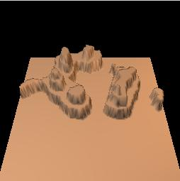
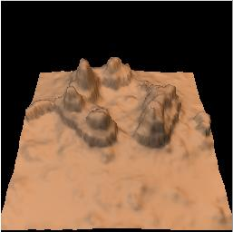
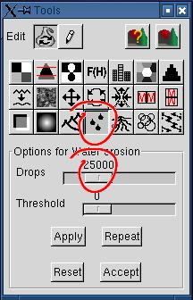
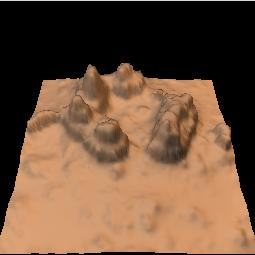

Create a new subdivision 2 document.
Set the distribution to a high value. This
would give "sparse" peaks.
Hit the refresh button until you get a few peaks grouped somewhere, or simply copy the seed given in the example.
It's not important if the peaks are not at the right place for now, we'll translate them later. What's important is that they are grouped in a relatively small part of the image, so that we can transform the rest of the HF in a wide plain - our foreground.
Hit the refresh button until you get a few peaks grouped somewhere, or simply copy the seed given in the example.
It's not important if the peaks are not at the right place for now, we'll translate them later. What's important is that they are grouped in a relatively small part of the image, so that we can transform the rest of the HF in a wide plain - our foreground.
ACTUAL_DISPLACEMENT = power (RD/MAX ; DISTRIBUTION) x MAX;Note that MAX depends on the scale, which depends on the subdivision step. Actually MAX is divided by 2 at each step.


The purpose is to decrease the lower parts of the terrain, so that we get peaks on a plain.
You can use the default parameters of the power transformation here. It raises each pixel height to its square (the "Parameter" is the exponent), then "clamp" the values so that they fit in the height field range (0-65535). If the surroundings of the peaks seem dark enough, accept the result. Otherwise, click "Reset" and try with 3 or a higher value. With a high exponent, the ground flattens and looses all details, if it is what you want.


We want to put the camera at the bottom center (South), looking towards the top center (North). It would be nicer with peaks centered West-East and moved North, in the background, so that the plain can be seen.
So, translating our image 15% East centers the peaks, and translating it 15% North put the peaks in the background.
In version 0.12, the document display "flickers" when you accept the translation. Although this could be annoying, it doesn't affect the result.


We want mesa-style hills, so we'll use the "Terraces" transformation to stratify the peaks.
The stratification is a 3-step process, although the result is usable after the first step:
(1) Quantizing.
(2) Smoothing and removing unwanted noise
(3) Merging with the original image.
We'll discuss merging in point 4b.
A mesa has a very few altitude levels, unlike terraces used for agriculture. Let's choose 4 levels.
The basic process creates levels of equal height. This could be boring. The random variation parameter alleviates this. The default value is 50% of the height of each level. Let's keep the default parameter. It can be read as "displace the altitude of the current level by a random value between 0% and 50% of the calculated difference between levels".
If you are not satisfied with the altitude of some levels, for instance if there are too many "needles" or narrow peaks, hit "Refesh" at will. The height of each level would vary, and so their surface, as long as your random variation parameter is not null.
Click on the left arrow under "post-processing" to get the "smoothing" and "artifact removal' controls.
Smoothing gives a more natural look. A radius of 2 here is enough, because we'll want to mix the result with the orginal, and to erode it with rain.
Use "Artifact removal" if your image contains annoying spots ("needles" when rendered), and if you cannot get rid of them by refreshing the random seed. It is in pixels. For a given effect, the radius should be proportional to the size of the image, so that 10 for a 512x512 image is equal to 20 for a 1024x1024 image.
Post-processing is expensive, so it is not immediate. To see the result, you must click "Apply", and wait.

The preview shows a pretty boring flat plain around the hills. Rendering the desert.pov scene is worse (actually, the height field ground would probably disappear under the sand plane).
The last subdialog of the terraces options allows you to mix the source and the result in variable proportions.
It will restore some detail on the ground, while smoothing the edges of the terraces.
Click on the left arrow to display the dialog (if you don't have a huge desktop, you would probably hide the post-processing dialog by clicking on its right arrow).
The default "Mode" = "+" is correct for our purpose. The default "Mix" is 100% result, 0% source. Click on the "0" button at the right for mixing the source and the result in equal proportions. This is the ratio used for this tutorial. You can try different proportions.


You can render the scene now by clicking
 The erosion must be light. We don't want to totally destroy the terraces edges. For a 512x512 image, you could try 25000 drops.
Render it, and if you are not satisfied, change the number of drops and hit "Apply". If you haven't clicked "Accept", it would reapply the drops to the uneroded height field.
If you only want to add drops, set the quantity to add and hit "Repeat". You avoid recomputing 25000 drops!

The desert.pov scene from Geomorph 0.12 and higher is coupled with the preview camera.
The final result shown above is obtained with the parameters given at right.
Remember than the parameters are saved with the PNG height field. Here, the first camera is used. The other cameras keep the default settings, as used in steps 1 to 5 of this tutorial.
Maybe you'll find that your rendered image needs some tuning. Look at desert.pov in your prefered editor. The parameters that you are likely to change are grouped at the bottom of the file, under a line of "*".
For this scene:
- I decreased slightly the height field vertical scale (Y axis). You can also get it by using the brightness / contrast tool in Geomorph.
- I adjusted the relative position of the height field and the sand plane, so that the sand plane is not totally hidden by the height field in the foreground, and the height field is not totally hidden by the plane. It's more interesting when spots of sand are seen among spot of rocks. Very small move of the height field or the sand plane modify a lot the final look.
- I scaled down the sand texture a lot, by scaling down the plane. It's an infinite plane, only its texture reacts to scaling.
- I played a lot with the fog parameters, just above the line of "*". Fog is dust here, so it should be light.